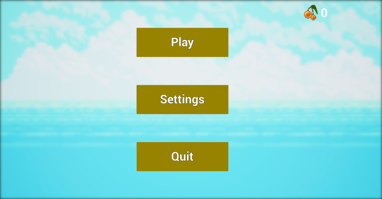
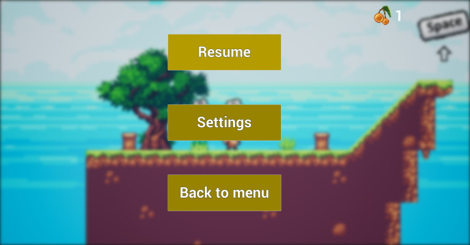
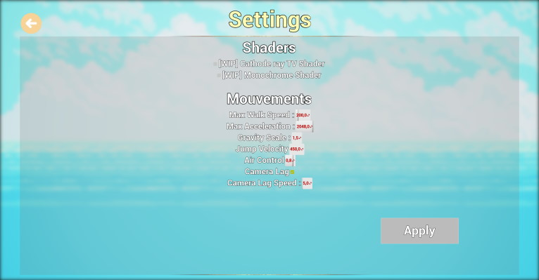
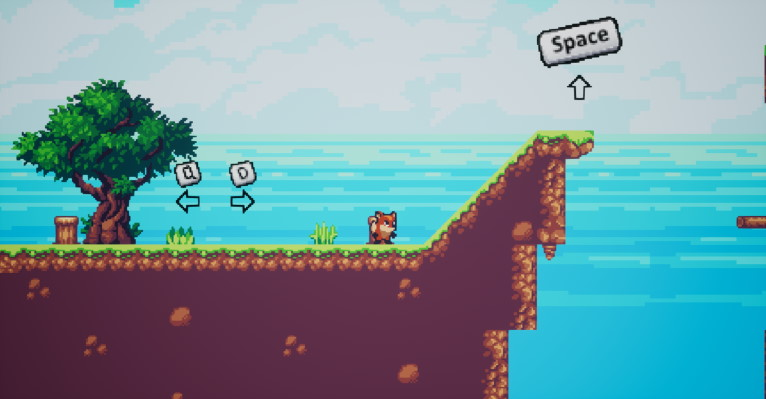
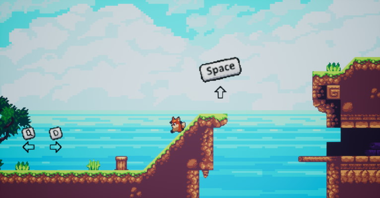
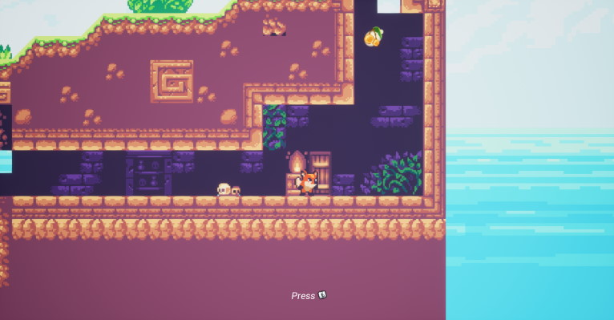

Ce jeu est mon premier test de jeu de platforme 2D sur Unreal Engine. Il m'a permis d'apprendre la créations des sprites et flipbook, la gestion des animations et la création des niveaux. J'ai aussi créé un menu d'options, ainsi j'ai réalisé en quelques jours ce concept en partant de créations Pixel art 2D libre de droits et certaines personnels.
Menu
Quand le joueur lance le jeu, il arrive sur un menu principal que voici :
Depuis ce menu il peut lancer le jeu, accéder aux options et quitter le jeu. En lançant le jeu, il arrive directement dans le premier et seul niveau du prototype. En développant davantage le jeu, il y aurait pu y avoir ici un sélecteur de niveau.
Le joueur peut à tout moment durant la partie ouvrir le menu avec la touche 'echap', ce qui met en pause le jeu et affiche ceci :
Dans le menu d'option, le joueur a le choix de modifier certains éléments de mouvements.
Gameplay
Une fois le jeu lancé, le personnage, un petit renard apparait. Il tombe sur la première platforme du jeu. Le joueur est amené à aller vers la droite car c'est le seul endroit où il y a une surface. Des indications sont affichés sur fond pour que le joueur apprenne les touches qui lui serviront durant le jeu. C'est une manière assez basique de procédé mais qui permet aux plus novices de comprendre comment le jeu fonctionne tant il y a de touches sur un clavier.
On se rend rapidement compte en se déplaçant que la caméra nous suit, elle est accrochée au personnage principale avec un léger effet de lag. En arrivant contre la rampe on se rend compte que notre personnage ne peut pas la gravir et qu'il va devoir sauté au dessus pour accéder à la suite du parcours. Si une surface est trop pentu le personnage glisse dessus.
En avançant dans le niveau, on peut rentrer dans une grotte dans laquelle ce trouve une porte. Quand le joueur arrive au contact de la porte, un message apparait lui disant qu'il peut intéragir avec en appuyant sur la touche E.
Vous aurrez peut-être remarqué la baie dorée dans le menu et dans le niveau. C'est un objet pouvant être ramassé par le joueur, à chaque baie ramassé le nombre de baie du joueur augmente, s'actualisant dans le menu du jeu.